Chess robot
A SCARA-style arm that moves chess pieces on a physical board, with a camera that reads the board from underneath so a player's hand never blocks the view.
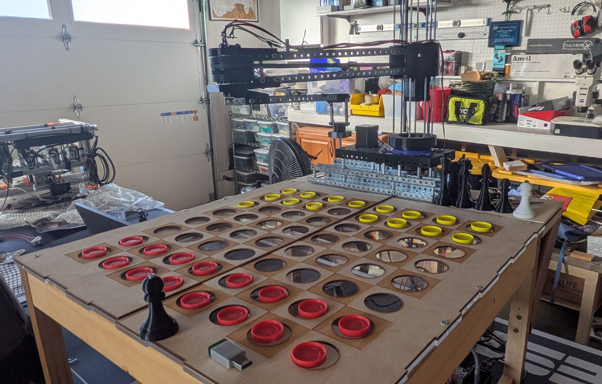
- Team
- 2 people. I worked mainly on the arm, board and motor control; my partner built the pieces, vision, move tracking and decision making. Often overlap and help in efforts.
- Timeline
- October 2025 - Present. Main structure and mechanical finalization July 2026
- Tools
- CAD software: Fusion 360, 3D printer, laser cutter, raspberry pi architecture, stepper motor drivers, electromagnet, small scale fabrication devices: band saw, drills, etc
- Outcome
- Nearing full game capabilites. Confirmed movement of pieces, full working elecrronics. Implimented game algorithm to match opponent level of skill. Working on honing cv pipeline, calibrating board positions & arm movement, as well as fully integrating all parts into full playability.
Choosing the design
Before building, I scored the options for three decisions: the pickup claw, the overall layout, and the arm. The highest total won each time.
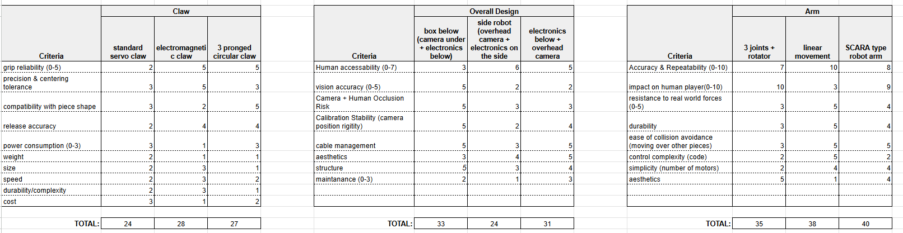
Layout. Putting the camera under the board scored 5 on human occlusion risk and 5 on calibration stability, against 3 and 2 for the side robot. It lost points on human accessibility (3, versus 6 for the side robot). I accepted that trade for reliable vision.
Arm. A linear gantry beat SCARA on accuracy (10 vs 8), but scored 3 on impact on the human player against 9 for SCARA. SCARA won overall, 40 to 38.
Claw. The score was close, but waranted testing for viability. After testing it became the confirmed choice.
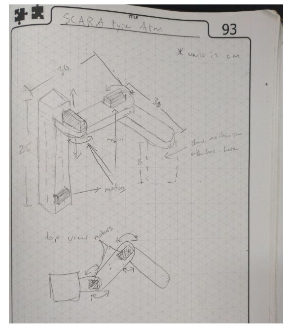
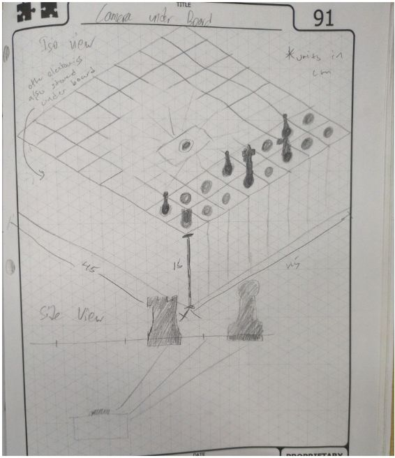
Early prototyping and testing
The box with the board is mainly made out of wood. The top layer was made through laser cut and engraved wood with a acrylic layer under for the camera to see thorugh. This box houses also houses all electronics. The mechanical arm was origanlly modeled in CAD before assembling. Throughout the process test pieces, and fits were tested to match the board.
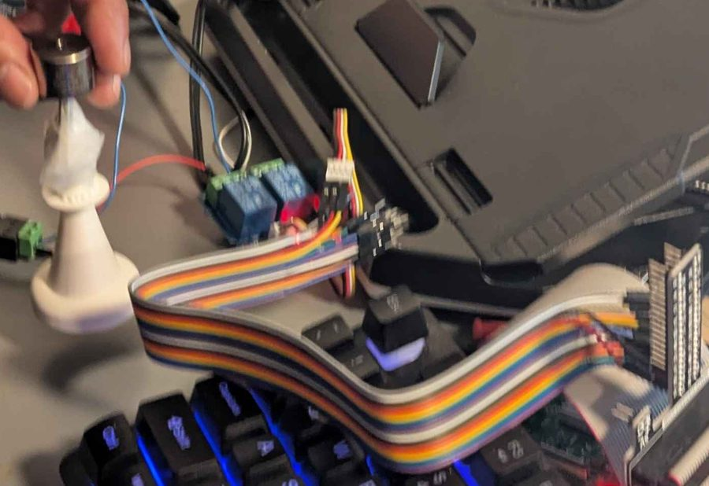
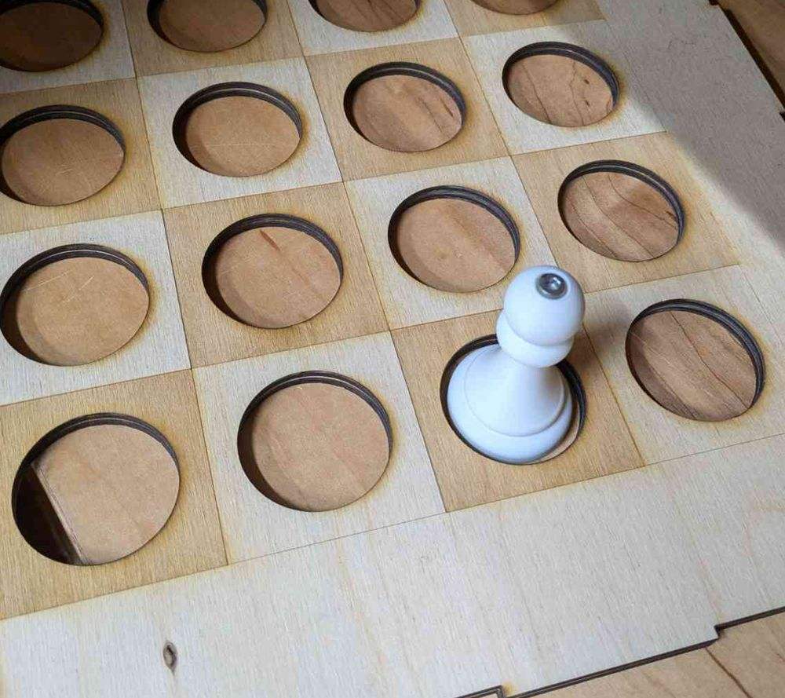
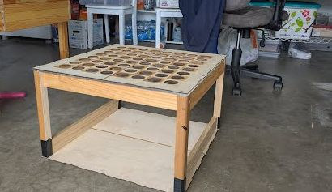
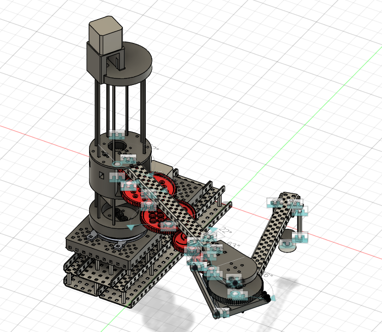
The arm: from gears to belts
Along with various strength and tolerance readjustments the major change occured due to the use of gears in the original design. They were too imprecise; the motor position varied by about 2 degrees of motion and there was no identical zero position, which made calibration hard. By switching from gear to belts with proper tensioning systems, the error variabily dropped to nearly zero.
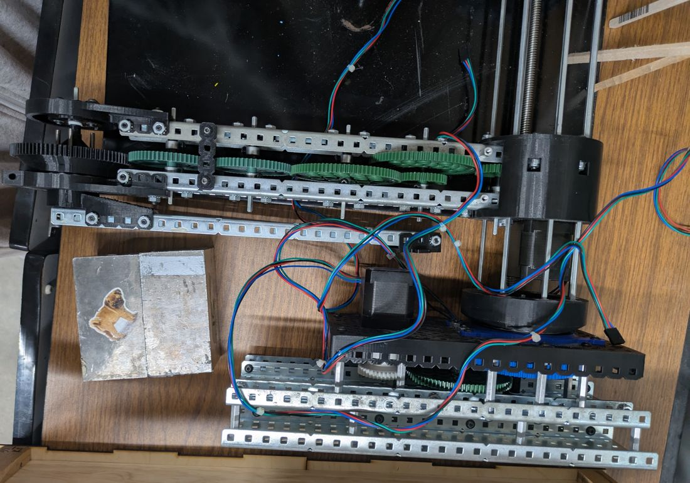
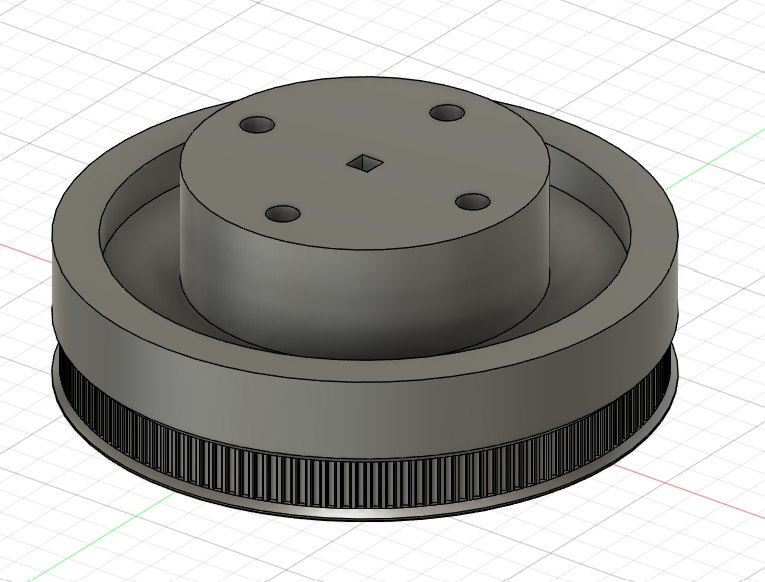
Computer vision
The raspberry pi used the camera under the board tracks the state of each piece on the board. By identifying the colored bases of the pieces, it can track each move played from starting position. There was no need to differently color each piece.
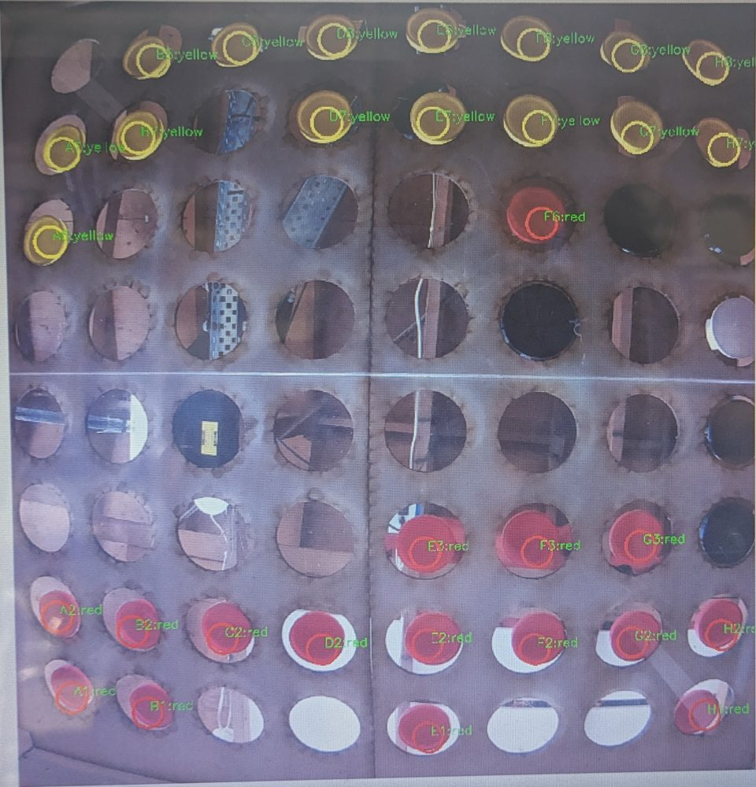
The program's output for the same board: 16 red and 15 yellow squares, matching the labels in the image.
Major Complications: The original version misidentified ~10% of pieces. This was due to different lighting conditions changing RGB values heavily. To solve this we changed from RGB to HSV, taking median pixel values over each hole, and taking the most common reading over several frames, which brought errors close to zero.
What I'd change
The entire box made the project compact and reliable, however was quite bulky especially when placed on a table. The height of the board requires standing to play. Preferably, if you could either add more cameras to lower the height of the board, or choose an overhead camera design with piece recognition. Mechanically, the arm has a slight tilt which could be made more rigid with design improvements.